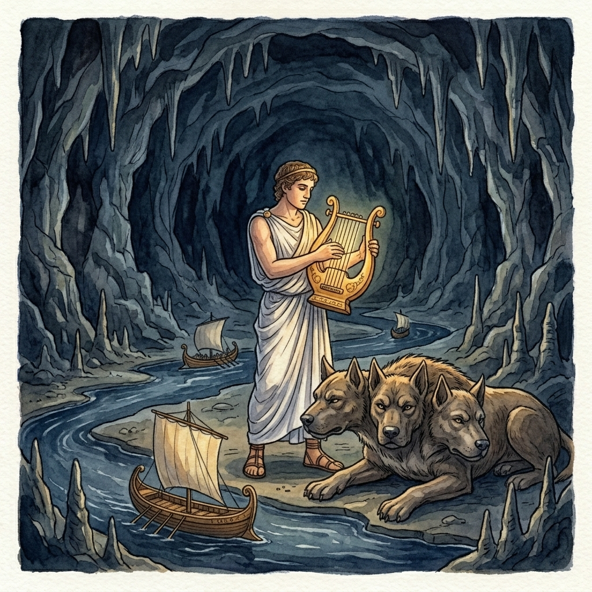

At the edge of the world, where the dark River Styx winds its way through the shadows, stand the gates of the Underworld. And before those gates lies Cerberus.
He was born to two monsters, Typhon and Echidna, and he looked the part. He had three heads, each with eyes like glowing coals, a serpent for a tail, and snakes bristling along his back. Some storytellers gave him fifty heads, but three is the number most people remember, and three was more than enough.
Hades, lord of the dead, had given Cerberus a single task, and he never failed at it. When the newly dead arrived at the gates, he greeted them with a wagging tail and a friendly welcome. But no soul that passed through those gates ever came back out, for any shade that tried to leave was torn apart by his jaws. Meanwhile, no living person had any business there, and none got past him.
For ages, that was how it stayed. Then, one day, a visitor came who did not mean to fight.
He was Orpheus, the greatest musician in the world, and he had come to bring his dead wife back to the land of the living. When he reached the gates, he did not draw a sword. Instead he lifted his lyre and began to play. The music drifted over the three great heads, one after another, until the growling softened and the burning eyes drooped and closed. Cerberus lay down like a puppy and let him pass.

The next visitor was a very different sort. Heracles had been set twelve labors by King Eurystheus, and the last and hardest was to bring back the hound of Hades. He first asked Hades for leave to take him, and the god agreed, on one condition: Heracles must master the beast without using any weapons.
So Heracles walked up to Cerberus with nothing but his own strength. The hound lunged, and the snake of his tail bit deep, but Heracles locked his arms around the great throat and squeezed until Cerberus yielded. Then he dragged the monster up out of the darkness, into the daylight, where the dog had never been. Wherever the drool from his jaws fell on the ground, poisonous aconite plants sprang up.
When Heracles arrived with his prize, King Eurystheus was so terrified that he leapt into a great bronze jar and hid there, begging Heracles to take the creature away. Heracles obliged, and he carried Cerberus back to the gates of the Underworld.
And there Cerberus lay down again to wait. The dead went on arriving, as they always would, and he went on guarding the line between the living and the dead.